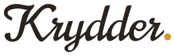
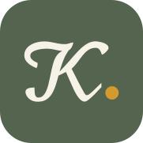
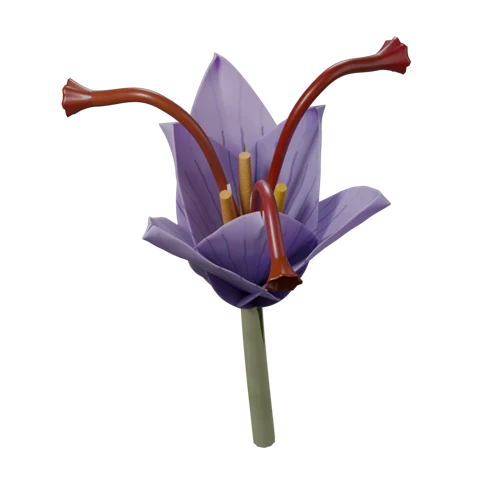
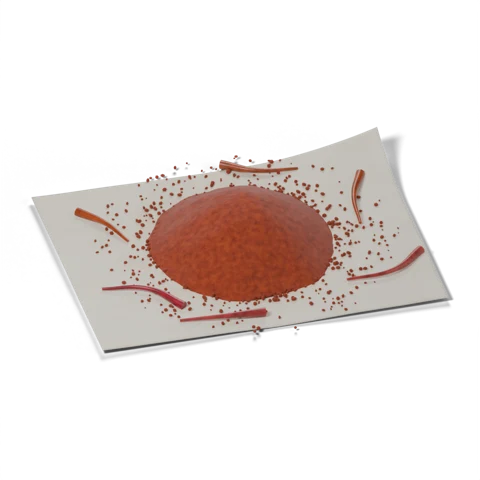
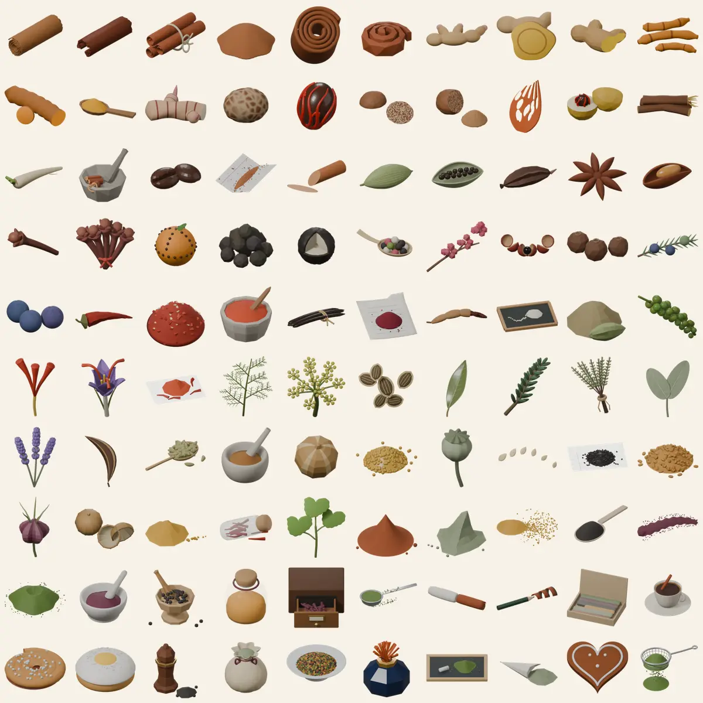
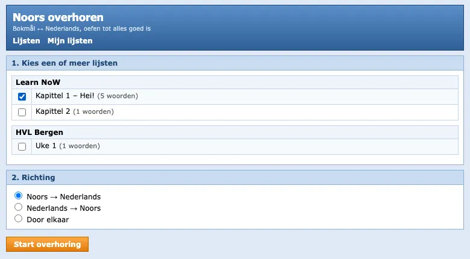
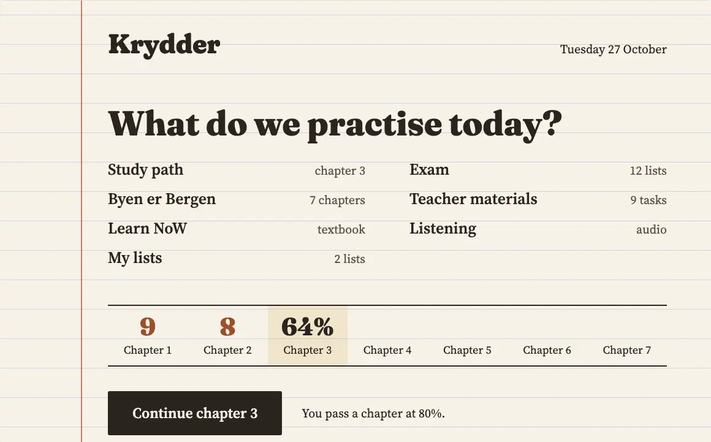
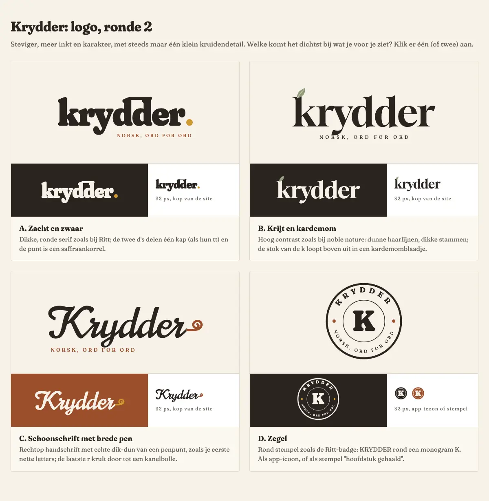
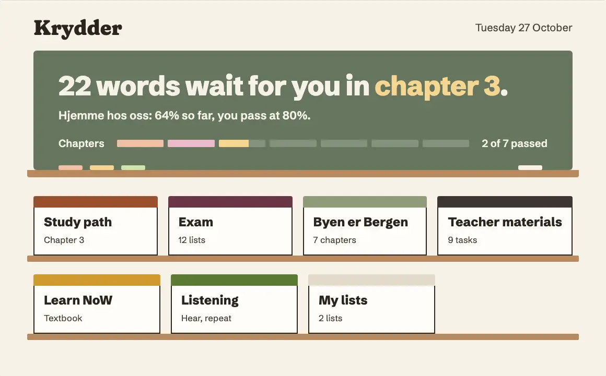
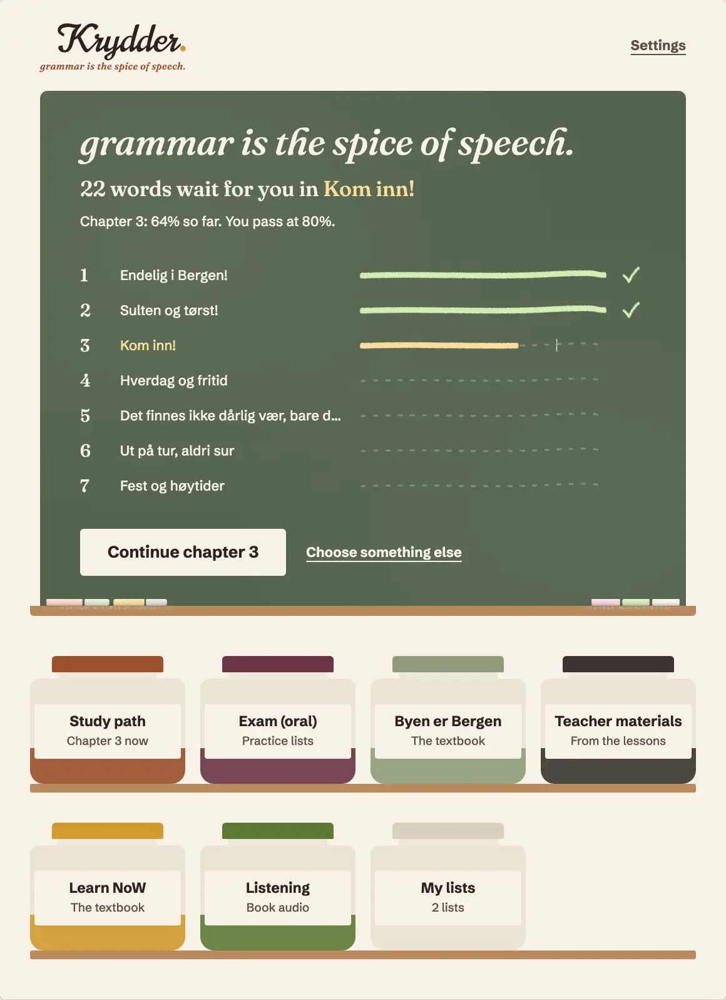

grammar is the spice of speech.Krydder is een oefenapp voor Noors op niveau A1. Dit merkboek laat zien hoe hij eruitziet, waarom, en hoe hij zo is geworden.
Krydder is een webapp om Noors te oefenen, zoals WRTS of StudyGo, maar dan gemaakt voor één cursus: Noors A1 aan de hogeschool in Bergen, met het lesboek Byen er Bergen.
Je oefent woorden en zinnen uit het boek, uit het lesmateriaal van de docent en uit de lijsten voor het mondeling examen. Je luistert naar de audio van de uitgever en naar een Noorse AI stem. De app werkt ook zonder internet.
Krydder is Noors voor kruiden.
Het motto komt uit de les. Toen we hoorden dat we grammatica moesten doen, zuchtte iedereen. De docent zei toen dat grammatica juist is wat een taal bijzonder maakt.
Daaruit kwam de zin grammar is the spice of speech. Bewust speech en niet language of words: je leert een taal om met mensen te praten. Contact is het doel, en ook de manier waarop je het echt leert.
Het motto staat altijd in kleine letters, met een punt.
Het merk moet voelen als leren zoals je je dat herinnert. Niet glimmend en niet druk; rustig, met tijd.
De kruiden zijn een lichte smaak erbovenop, niet het hoofdgerecht.
Geleend van een senior UI en UX ontwerper die Niels vertrouwt. Ze gelden voor elk scherm.
Het logo is het woord Krydder in een sierlijk schrift (Norican), omgezet naar lijnen zodat het overal gelijk is. De punt is een saffraan zaadje dat op de schrijflijn ligt. Er is geen krul en geen ander kruidendetail: het zaadje is genoeg.
De tagline staat rechts uitgelijnd onder het woord en eindigt precies onder het zaadje. Het is een gewone zin in een cursieve letter, zodat hij leest als een motto.

Rondom minstens de hoogte van een kleine letter (de r), ook boven de K en onder de tagline.
Met tagline nooit smaller dan 210 px, anders wordt de tagline kleiner dan 11 px. Zonder tagline nooit lager dan 20 px. Op papier: 55 mm breed met tagline, 25 mm zonder.
Elke woordsoort heeft een eigen kruid. Op papier zie je het kruid zelf; op het bord een lichte krijttint van hetzelfde kruid. Zo weet je bij elke vraag meteen waar je bent, zonder dat er een woord bij hoeft.
Water hoort bij één knop: Count as wrong, de natte spons. Zachte tekst is #5a514a, glas van de potjes #ebe3d3.
Alle tekst haalt minstens WCAG AA (4,5:1). Kruiden die op papier te licht zijn voor tekst, gebruiken we daar alleen als vlak of lijn, nooit als letter.
| Voorgrond | Achtergrond | Contrast | Gebruik |
|---|
woord 104 pxhusbord 60 pxKom inn!titel 40 pxCorrect.label 26 pxChecktekst 22 pxThe verb stays in second place.klein 19 px14 of 22Bewust groot: de kleinste tekst in de app is 19 px.
In het Nederlands klinkt kruid bijna als krijt. Dat is het hele idee: de gekleurde krijtjes op het bord zijn de kruiden. Een werkwoord schrijf je in kaneel, een zelfstandig naamwoord in kardemom.

Heel kruid is uitlegWaar de app grammatica uitlegt, staat het kruid heel: een stokje, een bloem, een tak. Rustig om naar te kijken.

Gemalen kruid is oefenenWaar je oefent, valt het kruid gemalen van bovenaf, als een snufje over je antwoord.
Elk scherm is een salie schoolbord op papier, met een houten richel eronder. Op de richel liggen echte rechte krijtjes. De letters op het bord zijn van krijt: van binnen vol, alleen de randen zijn korrelig.
Voorbeelden van de app staan in het Engels, zoals in de app zelf.
Op de computer staan de bronnen (boek, docent, examen, luisteren) als potjes op een kruidenrek. Op de telefoon worden het grote woorden met elk een krijtstreep eronder.
Count as right is een blok krijt met een krijtvinkje; de tekst is eruit gespaard, daar zie je het bord.
Count as wrong is een natte spons: waterblauw, zonder rand. Je veegt het antwoord weg.
De lijn is het snufje: onder elk zinsdeel ligt een dun lijntje gemalen kruid. Leeg is het een rij grijze puntjes, terwijl je typt verschijnen een paar korrels, en is het deel goed, dan is de lijn vol korrels. Tijd in kruidnagel, werkwoord in kaneel, onderwerp in peper, lijdend voorwerp in kardemom. Er is geen aparte krijtlijn en geen hoopje.
Eerlijk: in de live app komt deze kleur per zinsdeel in een latere stap, want de oefeningen hebben nog geen labels per zinsdeel.
Warm and round, with plenty of cardamom.
Het potje toont welke woordsoorten je in dit hoofdstuk hebt geoefend. Geen animatie en geen confetti: een rustig moment om te zien wat je hebt gedaan.
De kruiden zijn in 3D gemaakt in Blender. Eerst honderd gestileerde kruiden in klei, botanisch en gefacetteerd; daaruit koos Niels er zestien. Die zijn opnieuw gemaakt, half realistisch: met echte lichtberekening, textuur uit formules en per korrel of blad een iets andere kleur.

Elk kruid is gerenderd in twee aanzichten: schuin van boven en recht van boven. De laatste vijf zijn nog niet gekozen.
Op 96 px, op het bord. Zo verschijnen ze naast een uitleg van de grammatica.
Niels schrijft zelf geen code. Hij regisseerde het ontwerp in zeven rondes van schetsen: kiezen, afwijzen, aanscherpen. Een paar ijkpunten.




